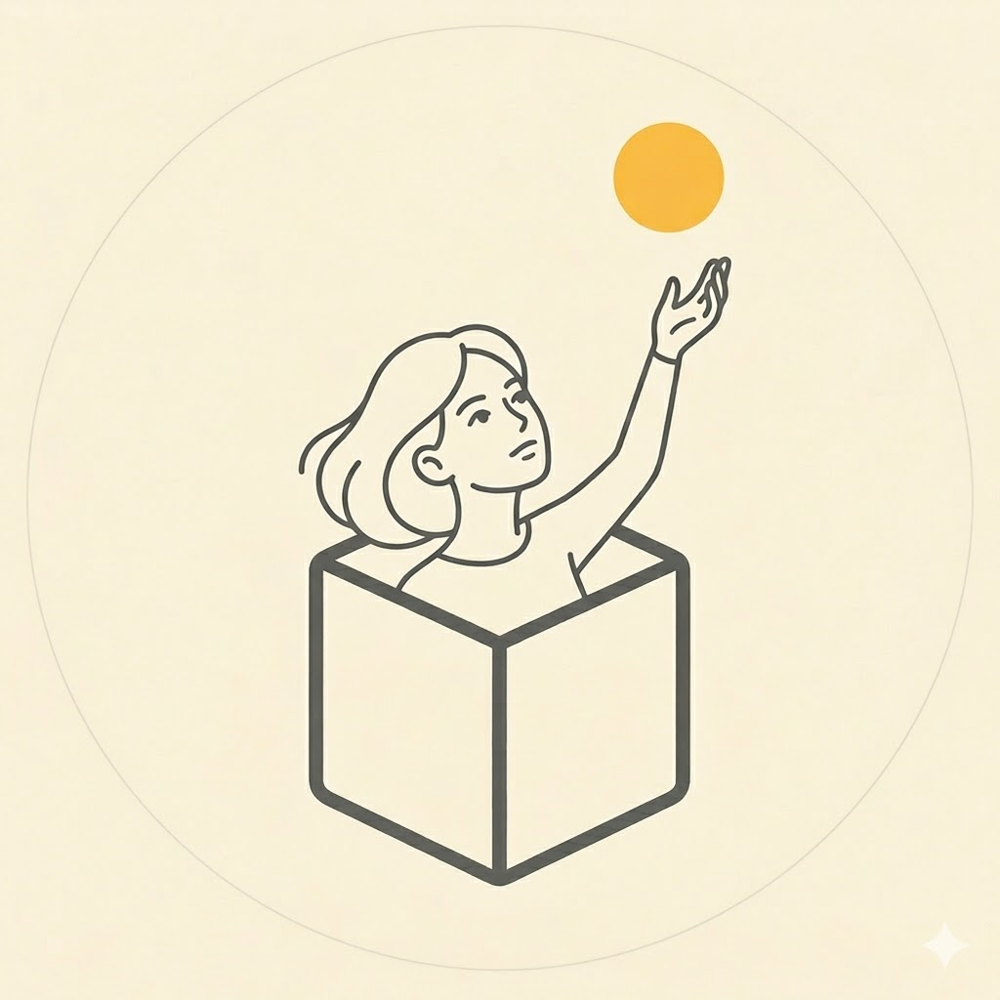

El Enigma Detrás del Código

Soy Valeria. Mi día a día consiste en construir los cimientos de edificios que nadie puede
tocar, pero que miles habitan simultáneamente. Algunos en la industria lo llaman
Backend, pero en realidad soy una traductora de acertijos: me apasiona
investigar el caos, conectar variables que parecen aisladas y transformarlas en procesos
invisibles que cambian la vida de las personas.
En mi viaje armando estos rompecabezas digitales, descubrí que mi verdadera misión no es
solo
teclear, sino diseñar maquinarias escalables que no se derrumben mañana. Entiendo tanto el
idioma de las máquinas como el de quienes las usan, por lo que disfruto ser ese engranaje
que
une al equipo. Si tu proyecto necesita a alguien que no solo piense fuera de la caja, sino
que
programe la lógica para hacerla levitar, estás en el lugar correcto.